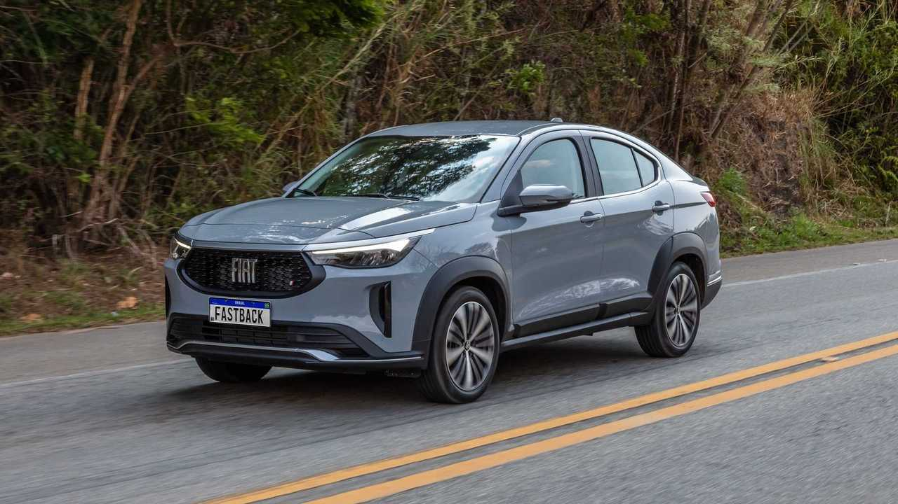
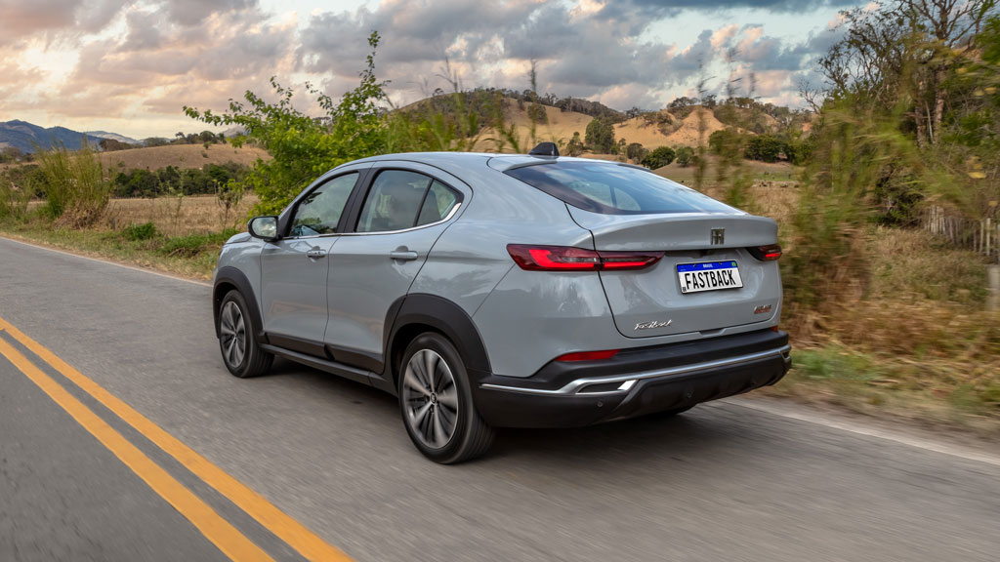

Fiat Fastback 2024
 Mesmo sendo um estreante por aqui, o Fastback chegou mostrando que vai incomodar os modelos mais tradicionais no disputadíssimo segmento dos SUVs compactos, hoje liderado pelo VW T-Cross. O primeiro ponto positivo, pelo menos para a maioria do público, é seu visual com estilo cupê. Ele trouxe algo diferente para uma turma que seguia praticamente a mesma linha, e isso ainda rendeu outro destaque: seu enorme porta-malas de 516 litros. Com a mesma base de Cronos e Pulse, esse SUV emprestou algumas coisas de seus irmãos e isso deixou seu custo de manutenção num patamar bem aceitável. Mas ele é superior em outros aspectos, como o nível de equipamentos. Mesmo olhando para a versão de entrada, você terá A/C automático e digital, sensor de estacionamento, multimídia de 8,4″ com espelhamento sem fio, câmera de ré, faróis e lanternas em LED, piloto automático e rodas aro 17. A linha de motores do Fastback traz o 1.0 turbo de 130 cv, muito bem ajustado para o carro, e o mais potente 1.3 turbo de 185 cv. O modelo ainda tem a versão Abarth. Os preços ficam entre R$ 121.990 e R$ 159.990.